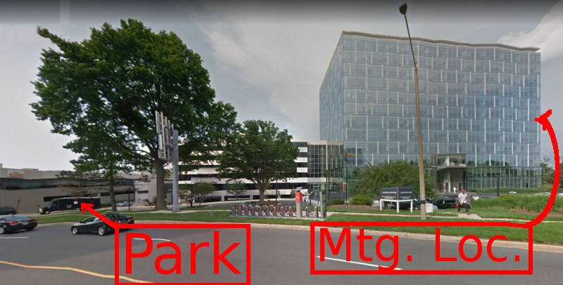
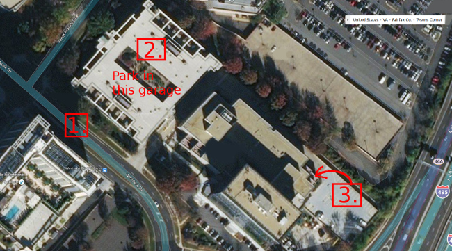

NoVaLUG
Northern Virginia Linux Users Group
Directions to Meetings / Parking
Location
Meetings of NoVaLUG are usually held on the second Saturday of the month in Suite A550, 7900 West Park Drive, Tysons, VA. (MAP). The meeting is in facilities provided by the Northern Virginia Chamber of Commerce.
Meeetings rune from 10:00 to 12:00 and attendees are encouraged to arrive by 9:45. Meetings may be cancelled around holidays.
 7900 West Park Drive.
 Overhead view of parking meeting place and adjacent parking garage.
- Westpark Drive
- Parking garage
- Location of meeting.
Exit parking garage on ground level. Proceed directly across walkway and walk the length of the building via the central promenade. Take elevator to floor 5, suite A 550. If needed, a parking stub validator will be near the entrance to the meeting room.
[Return to NoVaLUG home page.]